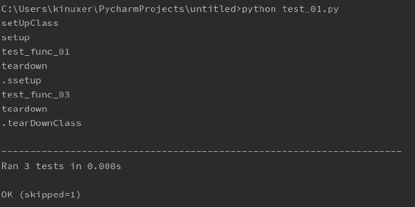
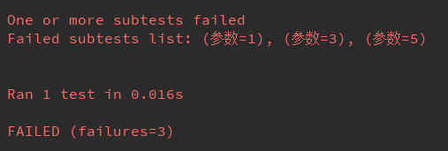
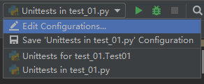
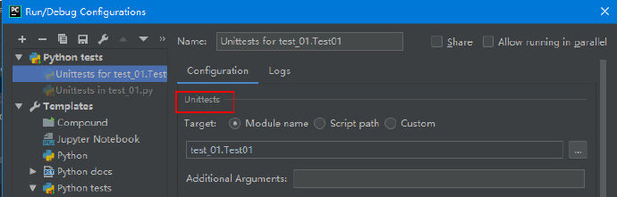

unittest基本概念编写测试用例（TestCase）subTest主动忽略测试简单执行测试用例命令行执行测试用例pycharm测试套件（TestSuite/TestLoader）手动创建自动加载测试运行器测试结果mockmock对象的使用Mock的init方法part 2part 3MagicMockNonCallableMock和NonCallableMagicMockpatch的使用
unittest是python自带的单元测试框架，它有如下四个核心核心概念：
创建一个unittest.TestCase的子类即为创建了一个测试用例。
x1import unittest23# 测试用例的名字没有硬性要求，但一般以Test开头4# 同样，测试用例所在的模块的名字没有硬性要求，但一般以test_开头5class Test01(unittest.TestCase):67 # 如果有需要的话也可以加上init方法8 def __init__(self, *args, **kwargs):9 super().__init__(*args, **kwargs)1011 # 每个以test开头的方法都是一次单独的测试12 def test_func_01(self):13 print('test_func_01 ')14 # 需要使用TestCase对象的assert*方法，而不是python的assert关键字15 self.assertTrue('123'.isdigit())1617 # 可以忽略不需要的测试方法，或者是测试类18 .skip('我不想执行它')19 def test_func_02(self):20 print('test_func_02')2122 def test_func_03(self):23 print('test_func_03')2425 # 每个测试方法执行前都会执行一遍，除非那个方法被skip了26 # 如果setUp失败了，那下一个测试方法就不会被执行27 def setUp(self):28 print('setup')2930 # 只要setUp执行成功，不管测试方法是否成功，tearDown都会被执行31 def tearDown(self):32 print('teardown')3334 # 当前测试用例执行前会被执行一遍，除非当前测试用例被skip了35 36 def setUpClass(cls):37 print('setUpClass')3839 40 def tearDownClass(cls):41 print('tearDownClass')执行结果如下：

一个TestCase对象只会执行一个测试方法，如果有多个测试方法，那会创建多个TestCase对象，所以TestCase类的init、setUp，tearDown方法会被执行多次。在init方法中绑定的对象在多个TestCase中都是独立的，互不影响的。 测试方法的执行顺序依据的是它们的名字的排序。
如果希望多次执行同一个测试方法，比如将不同的参数传给这个测试方法，可以使用子测试subTest
xxxxxxxxxx71class Test02(unittest.TestCase):2 # 测试某个数字是否为偶数，需要测试的数字为0~53 def test_func_01(self):4 for i in range(0, 6):5 # subTest(msg=None, **params)6 with self.subTest(参数=i):7 self.assertEqual(i % 2, 0)总共会进行6次测试，中途有测试失败，后续的测试还是会继续。主要输出结果如下：

如果在测试方法执行过程中希望忽略该测试方法，不往后执行了，可以使用如下方式。
xxxxxxxxxx61class Test01(unittest.TestCase):2 def test_func_01(self):3 # 抛出SkipTest异常4 raise unittest.SkipTest('不想继续执行了')5 # 或者是执行TestCase对象的skipTest方法6 self.skipTest('不想继续执行了')直接添加如下代码即可执行测试用例：
xxxxxxxxxx51if __name__ == '__main__':2 print('会被执行')3 unittest.main(verbosity=2)4 # unittest.main后面的代码不会被执行5 print('不会被执行')unittest.main会在指定模块下查找并执行测试用例（默认是当前模块）。
verbosity：0，默认模式，指打印测试用例的数量和结果；1，默认模式；2，详细模式
xxxxxxxxxx81# 自动发现并执行当前目录下的测试用例，-v输出更多细节2python -m unittest discover -v3# 指定测试用例所在目录，这里指定当前目录，效果同上4python -m unittest discover -s .5# 直接指定需要执行的测试用例，-v输出更多细节6python -m unittest -v test_module1 test_module27python -m unittest test_module.TestClass8python -m unittest test_module.TestClass.test_method
对于使用了testunit的源码，pycharm默认是以testunit命令行的模式来执行的，也就是模块的main函数会被忽略。可以看到pycharm的【运行配置文件】的名字变成了Unittests for/in module.py，而不是直接为module.py。

在【运行配置文件】中可以看到这个运行配置是针对的unittest。
xxxxxxxxxx111# TestSuite中可以包含TestCase或是TestSuite2suite = unittest.TestSuite()3suite.addTest(Test01('test_func_03'))4suite.addTest(Test01('test_func_02'))5# 支持包含TestCase或是TestSuite的iterable6suite.addTests([Test01('test_func_03'),Test01('test_func_02')])7# 输出4，包含4个测试用例8print(suite.countTestCases())9# suite是iterable10for c in suite:11 print(c.id())手动创建TestSuite可以让测试用例安装TestSuite中添加TestCase的顺序来执行
xxxxxxxxxx121loader=unittest.TestLoader()2# 基本上不需要手动创建TestLoader对象，可以直接使用现成的defaultTestLoader3# unittest.defaultTestLoader4# 从模块中加载，参数需要时模块类型的对象，这个方法估计很少用5s1=loader.loadTestsFromModule(sys.modules[__name__])6# 从TestCase类中加载7s2=loader.loadTestsFromTestCase(Test01)8# 指定名字加载，可以是模块名、测试用例名、或者是测试方法名9# 例子中的就是 模块.测试用例.测试方法10s3=loader.loadTestsFromName('test_01.Test01.test_func_03')11# TestLoader类的对象还有一个discover方法12# discover(start_dir, pattern='test*.py', top_level_dir=None)xxxxxxxxxx61TestCase.run(result=None)2TestSuite.run(result)3# TestCase和TestSuite对象都有run方法来执行测试，不同的是TestCase不一定要传入一个TestResult对象来记录结果4# 如果不传入，就调用自身的defaultTestResult()方法生成一个5TestCase.defaultTestResult()6# 这个方法创建的TestResult对象不是单例的，可以创建多个，不过我想一般也不需要手动调用它直接使用TestCase或TestSuite肯定是不推荐的，还是使用runner比较好。 unittest没有TestRunner类，测试运行器（TextTestRunner）直接继承自object。 它的执行结果TextTestResult则是继承自TestResult的。
xxxxxxxxxx71# 执行testcase或是Testsuite，输出结果到控制台，并返回TextTestResult2unittest.TextTestRunner().run(testCase)34# 输出结果到文件5with open('UnittestTextReport.txt', 'a') as f:6 runner = unittest.TextTestRunner(stream=f, verbosity=2)7 runner.run(suite)如果需要输出html的测试结果，需要使用HTMLTestRunner模块，这个是非内置模块，而且还不能只用pip安装，只能去网上下载。
测试结果中的测试用例的名字是用TestCase对象的id()方法获取的，一般是测试方法的方法名，如果需要自定义测试用例的id，直接将lambda函数赋值给id会比较方便。
TestResult中的一些属性记录了测试结果，比如 testsRun，跑了多少测试用例。 还有一些类似于Android Activity生命周期的方法，比如 addSuccess(self, test)，测试用例执行成功后被调用。通过继承TestResult，覆盖这些生命周期方法，可以自定义测试结果。 是每一个Test Case执行时都会执行Test result中的生命周期方法。
test case和test suite的run方法中都可以传入test result的对象，而test runner不同，它是在init方法中传入test result的类对象。
unittest.TextTestRunner(resultclass=MyResult).run(testcase)
MyResult：自定义的TestResult的子类。
testcase：TestCase对象。
testrunner其实也就是去执行传入的testcase或testsuite，测试用例的执行结果会保存在TestResult中，而testrunner会统计这些结果，比如用时多久、成功几个、失败几个。
mock就是模拟，它的主要作用就是用mock对象替换掉原先的python对象。 比如当一个函数A需要调用另一个函数B，并且函数B的返回结果会影响到函数A的结果，这个时候就需要mock掉函数B。原因可能有这几种：
xxxxxxxxxx141import unittest2from unittest import mock34def addition(i,j):5 # 返回i+j的结果6 pass78class MyTest(unittest.TestCase):9 def test_func(self):10 # 注意这个坑，自由变量可访问不可赋值11 global addition12 addition=mock.Mock(return_value=2)13 result=addition(1,1)14 self.assertEqual(result,2)我在一个测试用例中需要用到addition函数，但是这个函数还没写完。我知道给addition传入1，1后可返回2，故mock掉addition，直接设置它的返回结果为2。
为什么不直接定义result=2，原因至少有2：
addition=mock.Mock(return_value=2,side_effect=addition)，就会去调用真正的addition函数，而忽略return_value，比较方便。mock掉对象的成员方法也一样，直接obj.method=mock.Mock(...)
Mock对象和被Mock对象完全没有关系！！！ 可以看到我创建Mock对象不需要将被mock的对象作为参数传入，而是将被mock对象的引用指向新的Mock对象。
xxxxxxxxxx311import unittest2from unittest import mock34class Addition:5 def __init__(self):6 self.m1='hello'7 self.m2='world'8 self.assert_test='assert test'910 def func(self):11 pass1213 def __call__(self,i,j):14 return i+j1516class MyTest(unittest.TestCase):17 def test_func(self):18 # part 119 addition=Addition()20 addition=mock.Mock(return_value=2,side_effect=addition)21 result=addition(1,1)22 self.assertEqual(result,2)23 # part 224 addition=Addition()25 addition=mock.Mock(spec_set=['m1','assert_test'],unsafe=True,name='my mock name')26 print(addition.m1)27 print(addition.assert_test)28 # part 329 addition=Addition()30 addition=mock.Mock(**{'func.return_value':"func's return value"})31 print(addition.func())为了更好的讲解Mock类的init方法中的各个参数，我将Addition定义为可执行的类。part 1和mock函数类似，直接跳过
name：Mock对象的名字
spec_set，指定mock对象的哪些成员可以被访问。
访问其他成员会抛出AttributeError异常。
Mock的成员是Mock，比如Mock对象中的m1，是<Mock name='my mock name.m1' id='1452477333176'>，Mock用来模拟callable对象，仔细想想的话，mock掉non-callable对象完全没有意义啊，但这只是一个例子，无需在意这个。
另有spec参数，效果同spec_set
unsafe 凡是访问mock对象中的assret 开头的属性，都会抛出AttributeError。unsafe=True可以使其不抛出AttributeError。
Mock接受任意关键字参数，来设置mock的属性。比如**{'func.return_value':"func's return value"}，设置addition对象的func方法的返回值（Mock对象的成员也都变成了Mock，故func也被mock了）
直接使用func.return_value=XXX，会被认为是访问了func对象的return_value，故使用字典的形式。当然还必须要解压字典。
MagicMock是Mock的子类，区别是MagicMock mock掉了所有魔术方法。
xxxxxxxxxx21m = MagicMock()2m.__iter__.return_value = [1, 2, 3]比如，我可以mock掉__iter__方法，如果是Mock，它并没有实现__iter__方法。MagicMock的__iter__默认返回空列表。
如果不需要使用模式方法，MagicMock和Mock完全等效。
顾名思义，和Mock/MagicMock不同的是，这两种Mock是不可调用的。也就是没有return_value和side_effect属性。
这两类mock适用于本身为non-callable，但是包含callable属性的对象。
xxxxxxxxxx121import unittest2from unittest import mock34class NonCallable:5 def addition(self,i,j):6 return i+j78class MyTest(unittest.TestCase):9 def test_func(self):10 obj=NonCallable()11 mock_obj=mock.NonCallableMock(**{'addition.return_value':3,'addition.side_effect':obj.addition})12 self.assertEqual(mock_obj.addition(1,1),2)可以这么用，创建一个真实的对象，再创建一个对应的mock对象，mock对象有与真实对象相同的所有要用到的属性和方法。将需要模拟的方法使用return_value返回模拟值，不需要模拟的方法使用side_effect调用真实对象的真实方法。
patch()既是一个装饰器，也是一个上下文管理器，可以方便地生成MagicMock对象。
xxxxxxxxxx211import unittest2from unittest import mock34def addition(i,j):5 pass67class MyTest(unittest.TestCase):8 # 即便是本模块成员，也要带上模块名9 .patch('__main__.addition',return_value=2)10 def test_func(self,mock_addition):11 # mock_addition和addition都指向同一个MagicMock对象12 # test_func的参数直接叫addition就行了，不用改名字13 print(mock_addition is addition)14 self.assertEqual(addition(1,1),2)1516# 作为上下文管理器17class MyTest(unittest.TestCase):18 def test_func(self):19 with mock.patch('__main__.addition',return_value=2) as mock_addition:20 print(mock_addition is addition)21 self.assertEqual(addition(1,1),2)patch虽然没有名为return_value的关键字参数，但是有**kwargs，所以可以使用return_value和side_effect这些Mock的属性。
patch.object也是一个装饰器及上下文管理器，可以用来mock掉对象的属性。比如mock掉一个类对象中的类方法@patch.object(SomeClass, 'class_method')